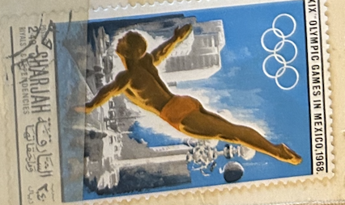
| SOURCE | TITLE| IMAGE MATCH | click to source page |
| ar.wikipedia.org | ملف:SHA 1968 MiNr0493A pm B002.jpg - ويكيبيديا | 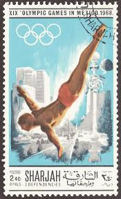 |
| www.ebay.com | Russia 2015 Mi.#2190 XVI FINA World Championship 1 ... | 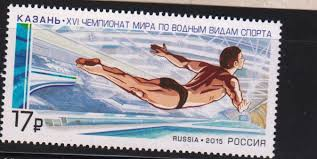 |
| edelweisspost.com | 10 Swimming Stamps Unused Vintage Summer Olympics Postage ... | 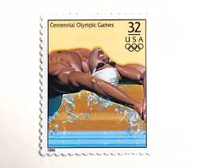 |
| www.ebay.com | SHARJAH STAMP MNH Commemorative MINT unused WM5534 | eBay | 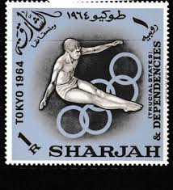 |
| www.dreamstime.com | Stamp Printed in Yemen Arab Republic Shows Jump into the ... | 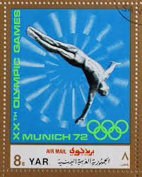 |
| www.mysticstamp.com | 2082 - 1984 20c Los Angeles Summer Olympics: Diving - Mystic ... | 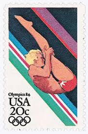 |
| www.alamy.com | 1972 munich olympics jumping hi-res stock photography and ... | 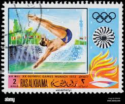 |
| www.buyhungarianstamps.com | 1257-1264 Poland - 18th Olympic Games, Tokyo (MNH) – Eastern ... | 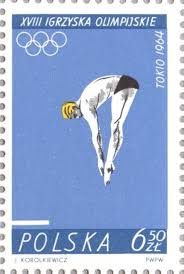 |
| oldthing.de | Sharjah Khor Fakkan Mi.Nr. 175B Olympia.. | Briefmarken günstig | 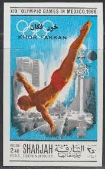 |
| www.mysticstamp.com | 291-94 - 1969 Ras Al Khaima - 1968 Mexico Olympics, Complete ... | 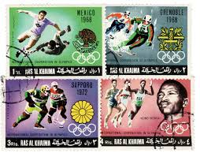 |
| www.ebay.com | US Scott #3068q, 1996 Men's Swimming : Summer Olympic Games ... | 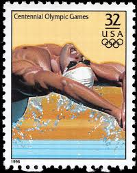 |
| www.shutterstock.com | Ukraine Circa 2017 Postage Stamp Printed Stock Photo ... | 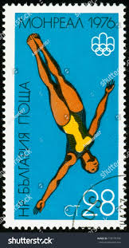 |
| russianphilately.com | 1979 Pocket calendar. Olympic Games XXII for sale at Russian ... | 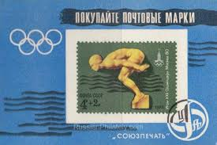 |
| ar.wikipedia.org | ملف:Diving (1) 1968 stamps of Sharjah.jpg - ويكيبيديا | 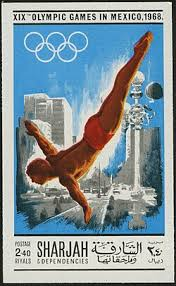 |
| colnect.com | Stamp: Diving (Yemen, Kingdom(Summer Olympic Games 1972 ... | 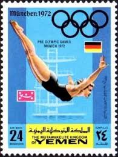 |
| edelweisspost.com | 10 Swimming Stamps Unused Vintage Summer Olympics Postage ... | 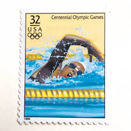 |
| www.instagram.com | Happy National Postage Stamp Day! A stamp is much more than ... |  |
| www.collectorsweekly.com | 1969 - Chad "Olympic Sports" Postage Stamps | Collectors Weekly | 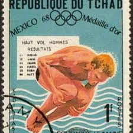 |
| es.pinterest.com | 210 ideas de CARTELES Y SELLOS POSTALES DE OLIMPIADAS ... | 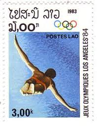 |
| www.ebay.com | Togo 1976 - Olympics, Diving, Gold Embossed - Individual ... | 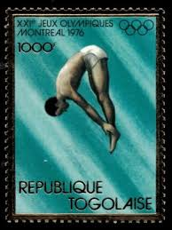 |
| baseballismy.life | 1996 Centennial Olympic Games - U.S. Postage Stamps ... | 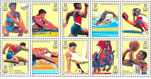 |
| findyourstampsvalue.com | Return to International Olympic Committee, 1st anniversary ... |  |
| www.alamy.com | Old man bathing suit hi-res stock photography and images - Alamy | 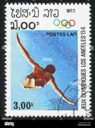 |
| www.freestampcatalogue.com | Stamps from the year 1972 with the theme Olympic Games ... | 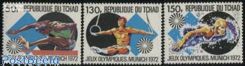 |
| www.xabusiness.com | 1992-8 Scott 2397-2401 25th Olympic Games - China Stamps | 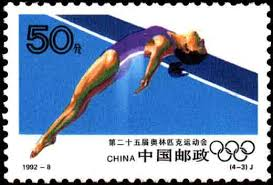 |
| www.takdeal.com | تمبر المپیک مونیخ 72 - راس الخیمه - تک دیل | 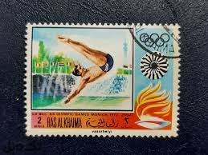 |
| www.ebid.net | Brazil 1946 Local Motif 0,40Cr Used Stamp on eBid United ... | 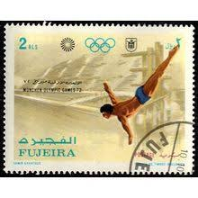 |
| sportsposterwarehouse.com | Atlanta 1996 Olympics Diving Official Event Poster by ... | 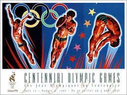 |
| postalmuseum.si.edu | Olympics | National Postal Museum |  |
| torob.com | خرید و قیمت تمبر چاپ راس الخیمه | ترب | 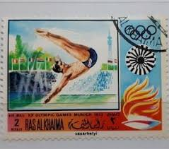 |
| www.mysticstamp.com | C107 - 1983 40c 23rd Summer Olympics '84, Women's Swimming ... | 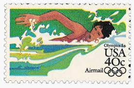 |
| www.buyhungarianstamps.com | C277-C283,CB31 Hungary - 19th Olympic Games, Mexico City ... | 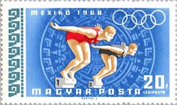 |
| lojinhadobigode.com.br | Sharjah - Olimpíadas 1968 | 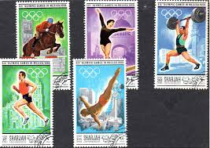 |
| www.amazon.com | Amazon.com: Olympic Games 1928 Nthe Official Poster For The ... | 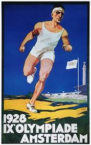 |
| www.leboncoin.fr | Timbre Ras-al-Khaima - Jeux Olympiques - Collection | 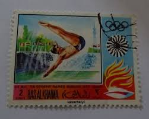 |
| www.dreamstime.com | GRENADINES of GRENADA - CIRCA 1976: a Stamp Printed in ... | 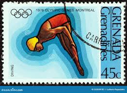 |
| www.facebook.com | For the Olympic Games in Munich, 1972, special cancelling ... |  |
| commons.wikimedia.org | Category:1968 Summer Olympics on stamps - Wikimedia Commons | |
| www.stampnewsonline.net | Olympics on Stamps, Stamp News Publishing | 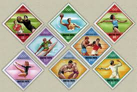 |
| esam.ir | تمبر باارزش راس الخیمه 1972/المپیک/گمرکی (92)6 | 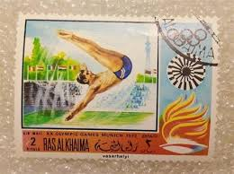 |
| www.briefmarken-muenzen-shop.de | Sharjah 1968 Olympiade Mexiko Komplett-Bogen 489/94 ... | 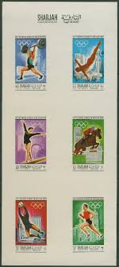 |
| www.nordfrim.com | Buy UN Vienna 1996 - Olympic Games - Cancelled souvenir sheet | 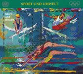 |
| www.shutterstock.com | 2,631 Twist Dive Royalty-Free Images, Stock Photos ... | 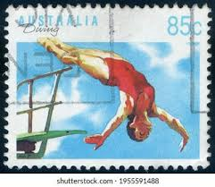 |
| www.kenmorestamp.com | Old Olympic Stamps | Olympic Games Stamps | Kenmore Stamp | 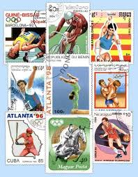 |
| www.justsomestamps.com | Just Some Stamps | 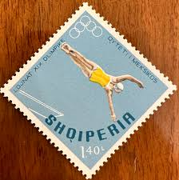 |
| 24h.pchome.com.tw | BLAKE LEE MAHON - PChome 24h購物 | 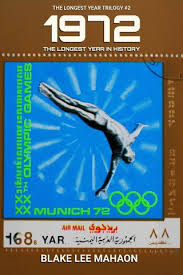 |
| www.original-briefmarken.de | XVIII SEA Games 1995, Chiang Mai (II) -OVERPRINT (I) | 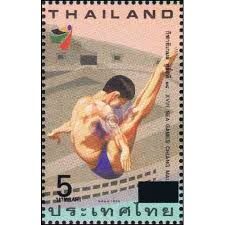 |
| www.postbeeld.com | Stamp 1968, Yemen, Arab Republic Olympic Games s/s, 1968 ... | 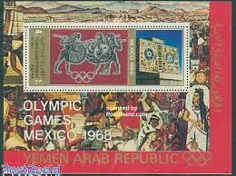 |
| en.wikipedia.org | Gymnastics at the 1896 Summer Olympics – Men's pommel ... | 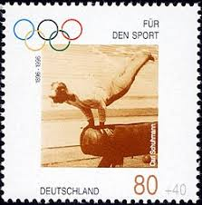 |
| www.todocoleccion.net | sello usado yemen - juegos olimpicos de munich - Compra ... | 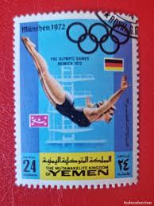 |
| www.reddit.com | A collection of satirical Berlin Olympics posters (1936 ... | 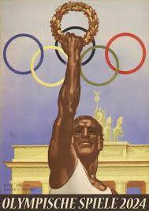 |
| www.ebay.com | Khor Fakkan Olympic Games Mexico 1968 Imperforated set and ... | 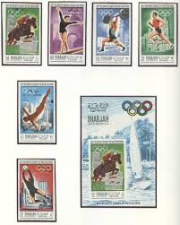 |
| findyourstampsvalue.com | Value of mexico 1968 olympics stamps | 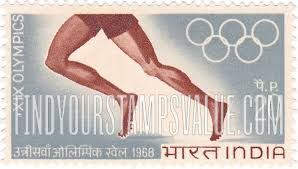 |
| www.alamy.com | The olympic games in munich 1972 hi-res stock photography ... | 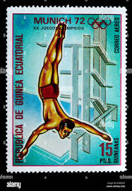 |
| www.postbeeld.com | Stamps from the year 1968 with the theme Olympic Games ... | |
| commons.wikimedia.org | File:Stamp of India - 1984 - Colnect 477274 - XXIII Olympics ... | |
| www.stampcommunity.org | Olympic Stamps--Show Us Yours! - Page 24 - Stamp Community Forum | |
| www.mysticstamp.com | 2553-57 - 1991 29c Summer Olympics - Mystic Stamp Company | |
| www.jconline.com | Lafayette's Ray Ewry sprang to Olympic fame |
{kind=link}
_1968_stamps_of_Sharjah.jpg){kind=link}
{kind=link}